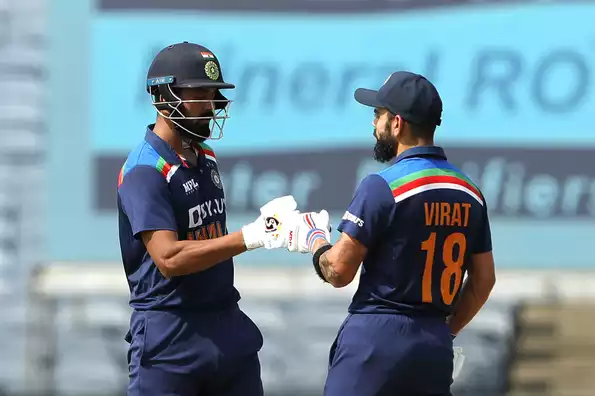

NZ's limited-overs tour of Australia postponed
Perth Scorchers have been found guilty of fielding an ineligible player during their BBL game against Adelaide Strikers at the Adelaide Oval on January 14 (Friday). The Scorchers brought in Central Local Replacement Player Brayden Stepien for the fixture and had her keep wickets for 14 overs, even as he was not part of Scorchers' 18-man squad. With this, Perth breached W/BBL's Player Contracting and Remuneration Rules. Perth Scorchers have been found guilty of a breach of the W/BBL Player Contracting and Remuneration Rules (Rules) at a Cricket Australia Code of Conduct Commission hearing on Tuesday, January 18. Perth Scorchers have been found guilty of fielding an ineligible player during their BBL game against Adelaide Strikers at the Adelaide Oval on January 14 (Friday). The Scorchers brought in Central Local Replacement Player Brayden Stepien for the fixture and had her keep wickets for 14 overs, even as he was not part of Scorchers' 18-man squad. With this, Perth breached W/BBL's Player Contracting and Remuneration Rules. Perth Scorchers have been found guilty of a breach of the W/BBL Player Contracting and Remuneration Rules (Rules) at a Cricket Australia Code of Conduct Commission hearing on Tuesday, January 18.
South Africa have won the toss and have opted to bat
South Africa don't have the greatest ODI record of late, and it's something they'll be keen to rectify under Bavuma. This series seems like a good opportunity to test out certain combinations. Much has gone on behind the scenes with Kohli giving up Test captaincy as well. Naturally the focus will be on him, as it will be on de Kock who pulled a shocker as he announced his retirement from the longest format.
What they said
Quinton and Janneman have done fairly well so I don't see that changing. I come back into the picture at No.3. Then it's the middle order - whether we want to go with an extra batter or an allrounder at No. 6. That's the real conversation that needs to happen
Why SA-India series is not part of ODI Super League
The ongoing South Africa-India One-Day International series, which started on Wednesday (January 19), is not part of the ODI Super League, which is a means to qualification for the ICC World Cup in 2023. According to ICC, all ODIs played towards the build-up to the World Cup are not, necessarily, part of the Super League. Only pre-decided series are.